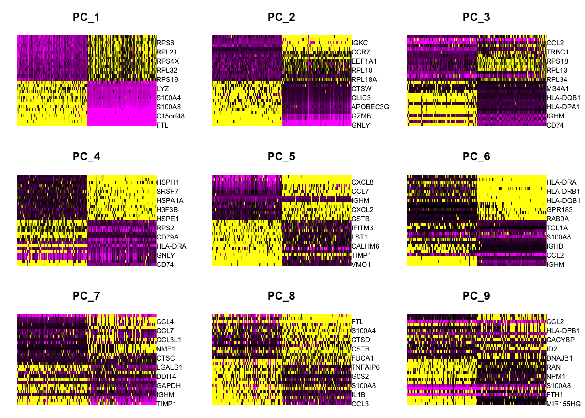
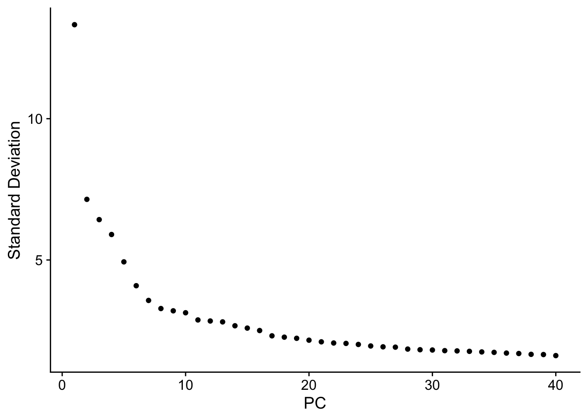
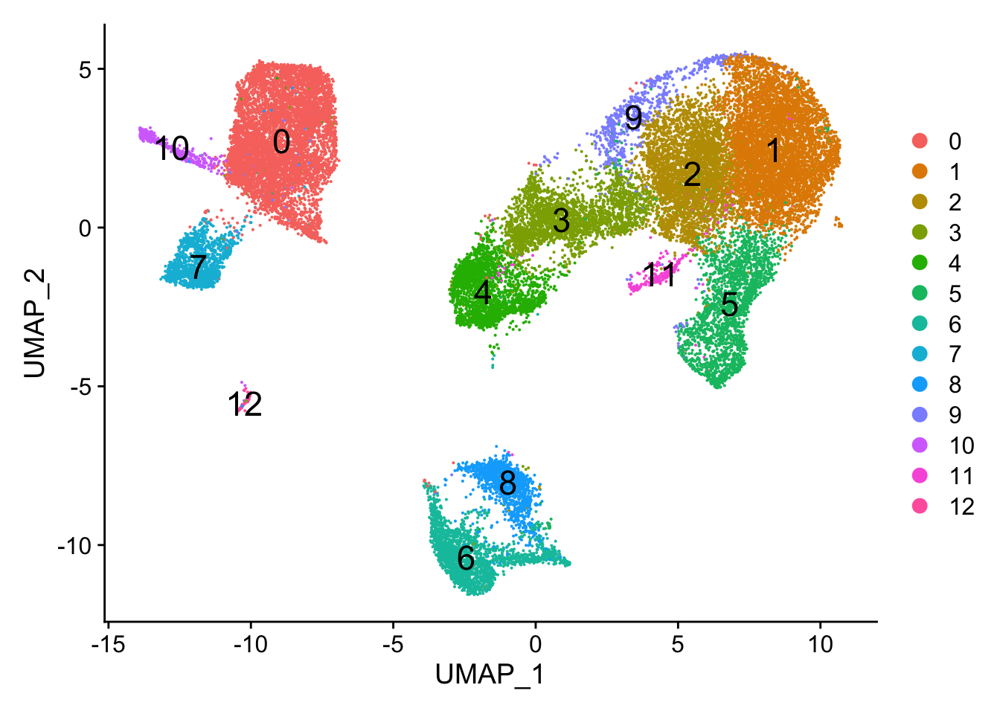
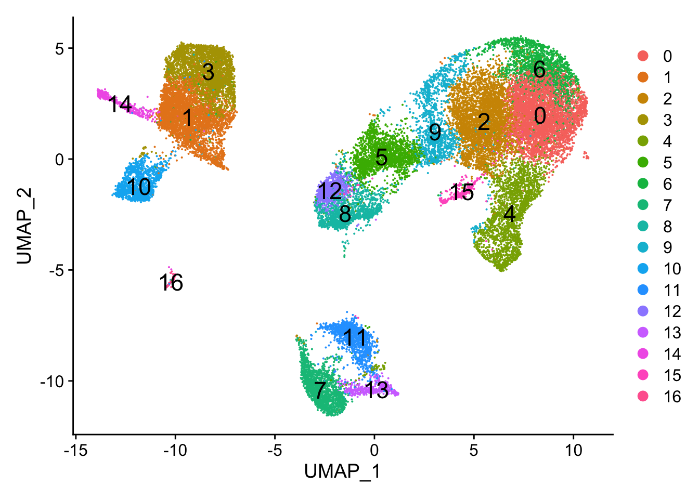

# Single-cell RNA-seq - clustering
# Load libraries
library(Seurat)
library(tidyverse)
library(RCurl)
library(cowplot)Single-cell RNA-seq: Clustering Analysis
Approximate time: 90 minutes
Learning Objectives:
- Describe methods for evaluating the number of principal components used for clustering
- Perform clustering of cells based on significant principal components
Single-cell RNA-seq clustering analysis
Now that we have our high quality cells integrated, we want to know the different cell types present within our population of cells.

Goals:
- To generate cell type-specific clusters and use known cell type marker genes to determine the identities of the clusters.
- To determine whether clusters represent true cell types or cluster due to biological or technical variation, such as clusters of cells in the S phase of the cell cycle, clusters of specific batches, or cells with high mitochondrial content.
Challenges:
- Identifying poor quality clusters that may be due to uninteresting biological or technical variation
- Identifying the cell types of each cluster
- Maintaining patience as this can be a highly iterative process between clustering and marker identification (sometimes even going back to the QC filtering)
Recommendations:
- Have a good idea of your expectations for the cell types to be present prior to performing the clustering. Know whether you expect cell types of low complexity or higher mitochondrial content AND whether the cells are differentiating
- If you have more than one condition, it’s often helpful to perform integration to align the cells
- Regress out number of UMIs (by default with sctransform), mitochondrial content, and cell cycle, if needed and appropriate for experiment, so not to drive clustering
- Identify any junk clusters for removal or re-visit QC filtering. Possible junk clusters could include those with high mitochondrial content and low UMIs/genes. If comprised of a lot of cells, then may be helpful to go back to QC to filter out, then re-integrate/cluster.
- If not detecting all cell types as separate clusters, try changing the resolution or the number of PCs used for clustering
Clustering cells based on top PCs (metagenes)
Set up
Before starting with this lesson, let’s create a new script for the next few steps in the workflow called clustering.R.
Next, let’s load all the libraries that we need.
Identify significant PCs
To overcome the extensive technical noise in the expression of any single gene for scRNA-seq data, Seurat assigns cells to clusters based on their PCA scores derived from the expression of the integrated most variable genes, with each PC essentially representing a “metagene” that combines information across a correlated gene set. Determining how many PCs to include in the clustering step is therefore important to ensure that we are capturing the majority of the variation, or cell types, present in our dataset.
It is useful to explore the PCs prior to deciding which PCs to include for the downstream clustering analysis.
- One way of exploring the PCs is using a heatmap to visualize the most variant genes for select PCs with the genes and cells ordered by PCA scores. The idea here is to look at the PCs and determine whether the genes driving them make sense for differentiating the different cell types.
The cells argument specifies the number of cells with the most negative or postive PCA scores to use for the plotting. The idea is that we are looking for a PC where the heatmap starts to look more “fuzzy”, i.e. where the distinctions between the groups of genes is not so distinct.
# Explore heatmap of PCs
DimHeatmap(seurat_integrated,
dims = 1:9,
cells = 500,
balanced = TRUE)
This method can be slow and hard to visualize individual genes if we would like to explore a large number of PCs. In the same vein and to explore a large number of PCs, we could print out the top 10 (or more) positive and negative genes by PCA scores driving the PCs.
# Printing out the most variable genes driving PCs
print(x = seurat_integrated[["pca"]],
dims = 1:10,
nfeatures = 5)PC_ 1
Positive: FTL, TIMP1, FTH1, C15orf48, CXCL8
Negative: RPL3, RPL13, RPS6, RPS18, RPL10
PC_ 2
Positive: GNLY, CCL5, NKG7, GZMB, FGFBP2
Negative: CD74, IGHM, IGKC, HLA-DRA, CD79A
PC_ 3
Positive: CD74, IGKC, HLA-DRA, IGHM, HLA-DRB1
Negative: TRAC, FTL, CCL2, PABPC1, S100A8
PC_ 4
Positive: CD74, IGHM, CCL5, GNLY, IGKC
Negative: HSPB1, CACYBP, HSPH1, HSP90AB1, HSPA8
PC_ 5
Positive: VMO1, FCGR3A, MS4A7, TIMP1, TNFSF10
Negative: CCL2, FTL, CXCL8, S100A8, S100A9
PC_ 6
Positive: IGHM, IGKC, CD79A, CCL2, MS4A1
Negative: HLA-DQA1, TXN, HLA-DRA, HLA-DPA1, LYZ
PC_ 7
Positive: TIMP1, S100A8, LYZ, IGHM, MARCKSL1
Negative: CCL2, CCL3, CCL4, CCL4L2, MIR155HG
PC_ 8
Positive: CCL3, CCL4, CXCL8, IL1B, CCL4L2
Negative: CCL2, LGALS3, FTL, ISG15, CTSL
PC_ 9
Positive: MIR155HG, NME1, HERPUD1, FTH1, DUSP4
Negative: HSPA1A, HSPB1, CCL2, CD74, IDO1
PC_ 10
Positive: CCL2, CREM, ANXA1, CXCR4, FTH1
Negative: GNLY, S100A8, TIMP1, S100A9, FTL - The elbow plot is another helpful way to determine how many PCs to use for clustering so that we are capturing majority of the variation in the data. The elbow plot visualizes the standard deviation of each PC, and we are looking for where the standard deviations begins to plateau. Essentially, where the elbow appears is usually the threshold for identifying the majority of the variation. However, this method can be quite subjective.
Let’s draw an elbow plot using the top 40 PCs:
# Plot the elbow plot
ElbowPlot(object = seurat_integrated,
ndims = 40)
Based on this plot, we could roughly determine the majority of the variation by where the elbow occurs around PC8 - PC10, or one could argue that it should be when the data points start to get close to the X-axis, PC30 or so. This gives us a very rough idea of the number of PCs needed to be included, we can extract the information visualized here in a more quantitative manner, which may be a bit more reliable.
While the above 2 methods were used a lot more with older methods from Seurat for normalization and identification of variable genes, they are no longer as important as they used to be. This is because the SCTransform method is more accurate than older methods.
Why is selection of PCs more important for older methods?
The older methods incorporated some technical sources of variation into some of the higher PCs, so selection of PCs was more important. SCTransform estimates the variance better and does not frequently include these sources of technical variation in the higher PCs.
In theory, with SCTransform, the more PCs we choose the more variation is accounted for when performing the clustering, but it takes a lot longer to perform the clustering. Therefore for this analysis, we will use the first 40 PCs to generate the clusters.
Cluster the cells
Seurat uses a graph-based clustering approach using a K-nearest neighbor approach, and then attempts to partition this graph into highly interconnected ‘quasi-cliques’ or ‘communities’ [Seurat - Guided Clustering Tutorial]. A nice in-depth description of clustering methods is provided in the SVI Bioinformatics and Cellular Genomics Lab course.
Find neighbors
The first step is to construct a K-nearest neighbor (KNN) graph based on the euclidean distance in PCA space.

Image source: Analysis of Single cell RNA-seq data
- Edges are drawn between cells with similar features expression patterns.
- Edge weights are refined between any two cells based on shared overlap in their local neighborhoods.
This is done in Seurat by using the FindNeighbors() function:
# Determine the K-nearest neighbor graph
seurat_integrated <- FindNeighbors(object = seurat_integrated,
dims = 1:40)Find clusters
Next, Seurat will iteratively group cells together with the goal of optimizing the standard modularity function.
We will use the FindClusters() function to perform the graph-based clustering. The resolution is an important argument that sets the “granularity” of the downstream clustering and will need to be optimized for every individual experiment. For datasets of 3,000 - 5,000 cells, the resolution set between 0.4-1.4 generally yields good clustering. Increased resolution values lead to a greater number of clusters, which is often required for larger datasets.
The FindClusters() function allows us to enter a series of resolutions and will calculate the “granularity” of the clustering. This is very helpful for testing which resolution works for moving forward without having to run the function for each resolution.
# Determine the clusters for various resolutions
seurat_integrated <- FindClusters(object = seurat_integrated,
resolution = c(0.4, 0.6, 0.8, 1.0, 1.4))Modularity Optimizer version 1.3.0 by Ludo Waltman and Nees Jan van Eck
Number of nodes: 29629
Number of edges: 1113933
Running Louvain algorithm...
Maximum modularity in 10 random starts: 0.9206
Number of communities: 13
Elapsed time: 3 seconds
Modularity Optimizer version 1.3.0 by Ludo Waltman and Nees Jan van Eck
Number of nodes: 29629
Number of edges: 1113933
Running Louvain algorithm...
Maximum modularity in 10 random starts: 0.9016
Number of communities: 15
Elapsed time: 3 seconds
Modularity Optimizer version 1.3.0 by Ludo Waltman and Nees Jan van Eck
Number of nodes: 29629
Number of edges: 1113933
Running Louvain algorithm...
Maximum modularity in 10 random starts: 0.8842
Number of communities: 17
Elapsed time: 3 seconds
Modularity Optimizer version 1.3.0 by Ludo Waltman and Nees Jan van Eck
Number of nodes: 29629
Number of edges: 1113933
Running Louvain algorithm...
Maximum modularity in 10 random starts: 0.8699
Number of communities: 22
Elapsed time: 3 seconds
Modularity Optimizer version 1.3.0 by Ludo Waltman and Nees Jan van Eck
Number of nodes: 29629
Number of edges: 1113933
Running Louvain algorithm...
Maximum modularity in 10 random starts: 0.8464
Number of communities: 27
Elapsed time: 3 secondsVisualize clusters of cells
To visualize the cell clusters, there are a few different dimensionality reduction techniques that can be helpful. The most popular methods include t-distributed stochastic neighbor embedding (t-SNE) and Uniform Manifold Approximation and Projection (UMAP) techniques.
Both methods aim to place cells with similar local neighborhoods in high-dimensional space together in low-dimensional space. These methods will require you to input number of PCA dimentions to use for the visualization, we suggest using the same number of PCs as input to the clustering analysis. Here, we will proceed with the UMAP method for visualizing the clusters.
We can only visualize the results of one resolution setting at a time. If we look at the metadata of our Seurat object(seurat_integrated@meta.data), you should observe a separate column for each of the different resolutions calculated.
# Explore resolutions
seurat_integrated@meta.data %>%
View()To choose a resolution to start with, we often pick something in the middle of the range like 0.6 or 0.8. We will start with a resolution of 0.8 by assigning the identity of the clusters using the Idents() function.
# Assign identity of clusters
Idents(object = seurat_integrated) <- "integrated_snn_res.0.8"Now, we can plot the UMAP to look at how cells cluster together at a resolution of 0.8:
## Calculation of UMAP
## DO NOT RUN (calculated in the last lesson)
seurat_integrated <- RunUMAP(seurat_integrated,
reduction = "pca",
dims = 1:40)# Plot the UMAP
DimPlot(seurat_integrated,
reduction = "umap",
label = TRUE,
label.size = 6)
It can be useful to explore other resolutions as well. It will give you a quick idea about how the clusters would change based on the resolution parameter. For example, let’s switch to a resolution of 0.4:
# Assign identity of clusters
Idents(object = seurat_integrated) <- "integrated_snn_res.0.4"
# Plot the UMAP
DimPlot(seurat_integrated,
reduction = "umap",
label = TRUE,
label.size = 6)
How does your UMAP plot compare to the one above?
It is possible that there is some variability in the way your clusters look compared to the image in this lesson. In particular you may see a difference in the labeling of clusters. This is an unfortunate consequence of slight variations in the versions of packages (mostly Seurat dependencies).
If your clusters look identical to what’s in the lesson, please go ahead to the next section.
If your clusters do look different from what we have in the lesson, please follow the instructions provided below.
Inside your data folder you will see a folder called additional_data. It contains the seurat_integrated object that we have created for the class.
- Load in the object to your R session and overwrite the existing one:
load(bzfile("data/additional_data/seurat_integrated.RData.bz2"))
Exercise
After loading seurat_integrated.RData.bz2, check the object clusters with different resolution (0.4, 0.6, 0.8, 1.0, 1.4). For each resolution plot the corresponding UMAP and report how many clusters you observe. Which resolution do you think makes sense?
We will now continue with the 0.8 resolution to check the quality control metrics and known markers for the anticipated cell types. Plot the UMAP again to make sure your image now (or still) matches what you see in the lesson:
# Assign identity of clusters
Idents(object = seurat_integrated) <- "integrated_snn_res.0.8"
# Plot the UMAP
DimPlot(seurat_integrated,
reduction = "umap",
label = TRUE,
label.size = 6)